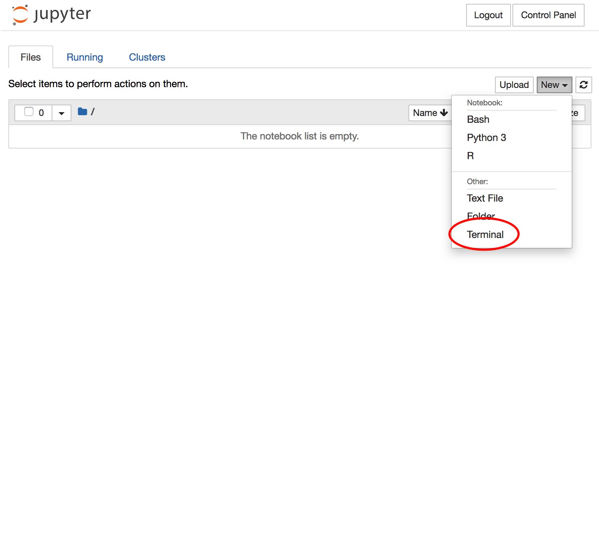

layout: true <div class="my-header"></div> <div class="my-footer"><img src=".images/BareBonesBash_Icon.png" /></div> --- class: center, middle # .tiny[_Boosted_ Bespoke] # .large[**Bare Bones Bash**] ## .tiny[Brought By Blissfully Baffled Bioinformaticians] Thiseas C. Lamnidis James A. Fellows Yates Aida Andrades Valtueña <br/> <br/> <br/> <a rel="license" href="http://creativecommons.org/licenses/by-sa/4.0/"> <img alt="Creative Commons License" style="border-width:0" src="https://i.creativecommons.org/l/by-sa/4.0/88x31.png" /> </a> .small[<br />This work is licensed under a <br/> <a rel="license" href="http://creativecommons.org/licenses/by-sa/4.0/">Creative Commons Attribution-ShareAlike 4.0 International License</a>.] --- # Who are we? .small[ ### ~~Bowser~~ James] .medium[ - BSc. @ Department of Archaeology (York) - MSc. @ Institute for Archaeological Sciences (Tübingen) - Ph.D.(?) @ Department of Archaeogenetics (Jena) ] .small[### ~~Yoshi~~ Thiseas] .medium[ - BSc. @ Department of Biology (York) - MSc. @ Department of Anthropology (Durham) - Ph.D.(?) @ Department of Archaeogenetics (Jena) ] .small[### Aida] .medium[ - BSc. @ UAB Department of Genetics (Barcelona) - MSc. @ Institute for Archaeological Sciences (Tübingen) - Ph.D.(?) @ Department of Archaeogenetics (Jena) ] .right-column-33[ <div class="vertical-center-with-title"> <img src=".images/James_JamessDaughter_Thiseas_In_Japan.jpg" width="80%"> </div> ] ??? BOTH --- # Aims of this session - Aim: - Get more familiar with text modification with bash -- - Objectives: - How to find stuff? - What is a while loop? - How to write a conditional statement (if/else) - Regular expressions (aka "Regex") - _Simple_ text modfication with `sed` (i.e. witchcraft) - _Advanced_ text modification with `awk` (i.e. necromancy) -- .left-column[ <p align="center"> <img title="Source https://giphy.com/gifs/comedy-retro-musical-UjYw9fdCEPwU8" src="https://media.giphy.com/media/UjYw9fdCEPwU8/giphy.gif" width=55% > </p> ] -- .right-column[ <p align="center"> <img title="Source: https://giphy.com/gifs/bethesda-elder-scrolls-online-necromancer-zumog-phoom-hsaHwzGKJucbXRa7B6" src="https://media.giphy.com/media/hsaHwzGKJucbXRa7B6/giphy.gif" width=70% > </p> ] --- # Future outcomes - Make your work more efficient - Large scale modifications of files - Make your work more reproducible - Wizardary (stuff that we can't even imagine...) <p align="center"> <img title="Source: https://giphy.com/gifs/t9lPSqrGSc1IOnajTz" src="https://media.giphy.com/media/t9lPSqrGSc1IOnajTz/giphy.gif" width=50% > </p> -- - Make fewer mistakes - Eliminate human error (blame it on the computer!) -- - Look like a ~~computer nerd~~ really cool --- class: center, middle # **RECAP**: Five Commandments of Bare Bones Bash ??? THISEAS --- class: middle .left-column[ ### 1. Be lazy! ] .right-column[ - Desire for shortcuts motivates you explore more! ] ??? It's better to spend 1day working on a script that will save you 5min per day for the rest of your PhD, than putting in those 5 minutes! TAB will be you favourite key by the time we are done here. --- class: center, middle .left-column[ ### 1. Be lazy! ### 2. ~~Google~~ The Hive-Mind knows everything. ] .right-column[ - Desire for shortcuts motivates you explore more! - 99% of the time, someone else has already had the same issue. ] ??? HOW to google programming questions is not as trivial as it sounds. In the final part of today's session we can talk a bit about this. --- class: center, middle .left-column[ ### 1. Be lazy! ### 2. ~~Google~~ The Hive-Mind knows everything. ### 3. Document everything you do. ] .right-column[ - Desire for shortcuts motivates you explore more! - 99% of the time, someone else has already had the same issue. - Makes future you happy ] --- class: center, middle .left-column[ ### 1. Be lazy! ### 2. ~~Google~~ The Hive-Mind knows everything. ### 3. Document everything you do. ### 4. There will ALWAYS be a typo! ] .right-column[ - Desire for shortcuts motivates you explore more! - 99% of the time, someone else has already had the same issue. - Makes future you happy - Don't get disheartened, even best programmers make mistakes ] --- class: center, middle .left-column[ ### 1. Be lazy! ### 2. ~~Google~~ The Hive-Mind knows everything. ### 3. Document everything you do. ### 4. There will ALWAYS be a typo! ### 5. Don't be afraid of you freedom! ] .right-column[ - Desire for shortcuts motivates you explore more! - 99% of the time, someone else has already had the same issue. - Makes future you happy - Don't get disheartened, even best programmers make mistakes - Explore! Try out things! ] ??? In my experience, most of learning in programming happens by failing. Repeatedly! --- class: center middle # Preparation! --- # Materials - A long-form walkthrough, and these slides, are all freely avaliable avaliable at: [https://github.com/TCLamnidis/BareBonesBash](https://github.com/TCLamnidis/BareBonesBash) - This session is under **Boosted Bare Bones Bash** <center> **INSERT BOOSTED BBB TOC SCREENSHOT HERE** </center> --- # Into the hacker-verse - Connecting to our server - In your browser, go to the URL that you got with your login information. - Log-in with the user and password we provided you. --- class: center <p align="left"><img src=".images/Jupyter1.png" width="100%" ></p> --- class: center <p align="left"><img src=".images/Jupyter2.png" width="100%" ></p> --- class: center <p align="left"><img src=".images/Jupyter3.png" width="100%" ></p> --- class: center <p align="left"></p> --- class: center <p align="left"><img src=".images/Jupyter5.png" width="100%" ></p> ??? What you see here is the "command prompt". username@server:pwd$ me, at the workshop server. ~ means "my HOME directory" (user specific). --- class: middle, center # Always mind the `$` and `>`! <p align="center"> <img title="Source: https://giphy.com/gifs/studiosoriginals-gilphabet-3o84U72tKO389H2lI4" src="https://media.giphy.com/media/3o84U72tKO389H2lI4/giphy.gif" width = "54%"> <img title="Source: https://giphy.com/gifs/animography-animated-typography-font-gzJNFeqcRcqnm" src="https://media.giphy.com/media/gzJNFeqcRcqnm/giphy.gif" width="30%"> </p> **H/W Fdbk:** When _sharing_ code, don't include the `$` or `>`! makes it harder for others to run! To write multi-line code in one: replace a newline with a `;` ??? in Bash ALWAYS MIND THE $. Only copy after the $ so you dont paste the command prompt too. $ is also important when dealing with variables, which you will see later today. --- class: center,middle # Uhh... what did we do? <p align="center"> <img title="Source: https://giphy.com/gifs/sonic-the-hedgehog-PJiqz1RHkdtGE" src="https://media.giphy.com/media/PJiqz1RHkdtGE/giphy.gif" > </p> --- # Uhh... what did we do? - **Make** a directory: --- # Uhh... what did we do? - ~~**Make** a directory:~~ - **What** did that do again? ```bash $ whatis mkdir ## or $ man mkdir ``` --- # Uhh... what did we do? - **Make** a directory: .left-column[ ```bash $ mkdir boosted_barebonesbash ``` ] .right-column[ > **H/W Note:** One command, multiple directories! ] -- - How to **download** a file? ```bash $ wget https://github.com/TCLamnidis/BareBonesBash/raw/master/data/NHM/data.csv ``` -- - How to **move** a something e.g. file into a directory? ```bash $ mv data.csv boosted_barebonesbash ``` --- # Uhh... what did we do? - **Make** a directory: .left-column[ ```bash $ mkdir boosted_barebonesbash ``` ] .right-column[ > **H/W Note:** One command, multiple directories! ] - How to **download** a file? ```bash $ wget https://github.com/TCLamnidis/BareBonesBash/raw/master/data/NHM/data.csv ``` - How to **move** a something e.g. file into a directory? ```bash $ mv data.csv boosted_barebonesbash ``` .left-column[ - Change **into** a directory ```bash $ cd boosted_barebonesbash ``` ] -- .right-column[ - What's **inside** my directory (+ info)? ```bash $ ls -l ``` ] --- # Uhh... what did we do? - What's **inside** a (text) file? ```bash $ cat data.csv $ head data.csv $ tail data.csv $ less data.csv ``` -- .left-column[ - How to **combine** tools? ```bash $ cat data.csv | grep '|' | wc -l ``` ] -- .right-column[ - **H/W Fdbk:** Be _lazy_! ```bash $ grep '|' data.csv | wc -l ``` ] ??? Remember we want to be lazy and efficient. While it is sometimes more 'readable', you don't need to cat every file into every program. Almost all programs accept a file by default. The latter means 1) less typing and 2) less computational resources -- .left-column-66[ - How do we **search inside** a text file? ] .right-column-33[ <p align="center"> <img title="Source: https://giphy.com/gifs/netflix-orange-is-the-new-black-oitnb-l4FGndnGHA5oA8sX6" src="https://media.giphy.com/media/l4FGndnGHA5oA8sX6/giphy.gif" width=70% > </p> ] -- .left-column-66[ - How do I **edit** a file? ```bash $ nano data.csv ``` > To exit without saving any changes: ctrl + x ] --- # Uhh... what did we do? - How to assign a **variable** ```bash $ Variable=Yes ``` -- - How do I **repeat** a command multiple times on a list of things? ```bash $ for i in Greece Spain Britain; do > echo "Does $i have lovely food? $Variable" > done ``` -- ``` Does Greece have lovely food? Yes Does Spain have lovely food? Yes Does Britain have lovely food? Yes ``` --- # Preparation - Download the following file ```bash $ <whats_the_command?> tinyurl.com/Boosted-BBB-zip ``` --- # Preparation .left-column[ - Download the following file ```bash $ wget tinyurl.com/Boosted-BBB-zip ``` ] .right-column[ - **H/W Fk:** write _why_ bash comments with `#` ```bash ## use wget to download a file ``` ] ??? Also: COMMENTING IS LANGUAGE SPECIFIC. In bash you can only use #. -- - `unzip` the `.zip` file by **auto-completing the file name with your TAB key!** ```bash $ unzip Boosted-BBB-zip ``` -- - Ah that didn't work - `unzip` didn't recognise the file type! What else can `mv` do? -- .left-column[ ```bash $ mv Boosted-BBB-zip Boosted-BBB.zip $ unzip Boosted-BBB.zip ``` > What is the name of directory you just extracted? >What do you see in there? ] .right-column[ <p align="center"> <img title="Source: https://giphy.com/gifs/bobs-burgers-fox-bobs-burgers-3og0IRc1sW8yPON3WM" src="https://media.giphy.com/media/3og0IRc1sW8yPON3WM/giphy.gif" width="80%"> </p> ] --- # Final homework feedback .left-column[ <p align="center"> <img title="https://giphy.com/gifs/UKTVGIFBANK-eMUEeNGdwU7JDZ28g0" src="https://media.giphy.com/media/eMUEeNGdwU7JDZ28g0/giphy.gif" width="80%"> </p> ] .left-column[ - ALWAYS include a 'target' directory when using `ln -s` (even if just `.`). - This is more readable, and less error prone! - To select all lines _not_ matching a pattern, can use the grep flag `-v` (no need to `diff`! But good find!) - Comments - Comment **step by step**! - Better: **why** something is done, rather than _what_ it accomplishes. - Helps others (such as your baffled bioinformaticians) and **yourself** in two years. ] ??? i.e. Nicely written code should be self explanatory as to 'how', but 'why' is more useful. --- class: middle,center <p align="center"> <img title="Source: https://giphy.com/gifs/mario-super-64-WZdlab0U3AkSc " src="https://media.giphy.com/media/WZdlab0U3AkSc/giphy.gif"> </p> Make sure to `cd` back to `~/boosted_barebonesbash` now! ??? OK! Recap done! LETS'A GO! --- #Outline .large[ - Where is my stuff?? - Concept: Datastreams and redirects - Concept: Quotes matter! - While loop: to infinity and beyond! - How to rename stuff - Concept: Bash expansion - Concept: Regular expressions - Conditionals: IF/ELSE - Modifying files: SED, PASTE, AWK ] --- # Where is my stuff?? ```bash $ find ``` How can you search for files and directories hidden in layers and layers (of your very organised 😉) directories? <p align="center"> <img title="https://giphy.com/gifs/download-find-funsubstancea-XSJIE5xMWA9HO " src="https://media.giphy.com/media/XSJIE5xMWA9HO/giphy.gif"> </p> --- # Where is my stuff?? ```bash $ find Pictures_Summer_2020 ``` - **First** part of the `find` command: _the place to look from_ - e.g. `.` to indicate 'here' -- - Could also use `~/` -- - Could use absolute path e.g. `/home/james/` <br/> <br/> <br/> <br/> <br/> <br/> <br/> <br/> <br/> > **Question** What is the difference between `~/` and `/home/james`? --- # Where is my stuff?? ```bash $ find Pictures_Summer_2020 -type f ``` - **First** part of the `find` command: _the place to look from_ - e.g. `.` to indicate 'here' - Could also use `~/` - Could use absolute path e.g. `/home/james/` - **Second** part of the `find` command: _what type of things to look for?_ - Use `-type` to define the filetype: - __f__ile - __d__irectory --- # Where is my stuff?? ```bash $ find Pictures_Summer_2020 -type f -name ``` - **First** part of the `find` command: _the place to look from_ - e.g. `.` to indicate 'here' - Could also use `~/` - Could use absolute path e.g. `/home/james/` - **Second** part of the `find` command: _what type of things to look for?_ - Use `-type` to define the filetype: - __f__ile - __d__irectory - **Third** part of the `find` command: _what to look in?_ - Use `-name` to say look in 'names' of things <br/> > **Question** What do wildcards mean? --- # Where is my stuff?? ```bash $ find Pictures_Summer_2020 -type f -name banana.txt ``` - **First** part of the `find` command: _the place to look from_ - e.g. `.` to indicate 'here' - Could also use `~/` - Could use absolute path e.g. `/home/james/` - **Second** part of the `find` command: _what type of things to look for?_ - Use `-type` to define the filetype: - __f__ile - __d__irectory - **Third** part of the `find` command: _what to look in?_ - Use `-name` to say look in 'names' of things - **Finally** `-name` should be followed by the names that you want to search for. - Use wildcards (*) for maximum laziness! <br/> <br/> --- # Where is my stuff?? We are looking for all files with the suffix `JPG`. Let's first set the suffix we want to a variable, so we can easily change it in the future. ```bash suffix="JPG" ``` -- We can now call on this variable in our search. Try the following command: ```bash $ find Pictures_Summer_2020 -type f -name '*$suffix' ``` -- **That found no files!!** But `ls` confirms that these files exist! -- Now look at the command below: ```bash $ find Pictures_Summer_2020 -type f -name "*$suffix*" ``` .left-column-66[What has changed here? ] -- .left-column-66[Run the second command.] ??? This time the command finds the files! What in tarnation is going on!? --- # Where is my stuff?? We are looking for all files with the suffix `JPG`. Let's first set the suffix we want to a variable, so we can easily change it in the future. ```bash suffix="JPG" ``` We can now call on this variable in our search. Try the following command: ```bash $ find Pictures_Summer_2020 -type f -name '*$suffix' ``` **That found no files!!** But `ls` confirms that these files exist! Now look at the command below: ```bash $ find Pictures_Summer_2020 -type f -name "*$suffix*" ``` .left-column-66[What has changed here? Run the second command.] .right-column-33[<p align="center"><img src="https://tenor.com/view/nagato-naruto-shippuden-nagato-kid-nani-apa-gif-12417317.gif" title="Source: https://tenor.com/view/nagato-naruto-shippuden-nagato-kid-nani-apa-gif-12417317.gif" width="85%"> </p>] ??? This time the command finds the files! What in tarnation is going on!? --- # Concept: Quotes matter! In bash, there is a big difference between a single quote `'` and a double quote `"`! - The contents of single quotes, are passed on as they are. - Inside double quotes, contents are _interpreted_! ??? That means that it will be read just like the rest of the code. -- .left-column-66[ In some cases the difference doesn't matter: ```bash $ echo "I like Greek Food" $ echo 'I like Greek Food' ``` ``` I like Greek Food I like Greek Food ``` ] -- .right-column-33[ <p align="center"><img src="https://media.giphy.com/media/NSqQkXJjnsVpZQezfg/giphy.gif" title="Source: https://media.giphy.com/media/NSqQkXJjnsVpZQezfg/" width="90%"> </p> <p align="center"><img src="https://media.giphy.com/media/bh4jzePjmd9iE/giphy.gif" title="Source: https://media.giphy.com/media/bh4jzePjmd9iE/" width="90%"> </p> ] .left-column-66[ In other cases it makes all the difference: ```bash $ Arr=Banana $ echo 'Pirates say $Arr' $ echo "Minions say $Arr" ``` ``` Pirates say $Arr Minions say Banana ``` ] ??? You can already see from the syntax highlighting that $Arr is treated differently in the two quotes. --- # Cleaning up the filenames It seems your camera has the habit of adding ugly hashes at the end of all your vacation pictures! ??? You can't upload them to Instagram like that! Let's clean up the filenames. -- #### We will be using `cut` and `rev`. Any guesses what these commands might do? - `rev`: - `cut`: ??? Reward to anyone who uses `whatis` or `man` --- # Cleaning up the filenames It seems your camera has the habit of adding ugly hashes at the end of all your vacation pictures! #### We will be using `cut` and `rev`. Any guesses what these commands might do? - `rev`: reverses a character string - `cut`: cuts a string into multiple pieces .left-column[ <p align="center"> <img style="transform: scaleX(-1)" src="https://media.giphy.com/media/mUGRVgAkamLZe/giphy.gif" title="Source: https://giphy.com/gifs/pony-mUGRVgAkamLZe" width="100%"> </p> ] .right-column[ <p align="center"> <img style="transform: scaleX(-1)" src="https://media.giphy.com/media/2GdACZsbRnTmo/giphy.gif" title="Source: https://giphy.com/gifs/movie-photoset-2GdACZsbRnTmo" width="93%"> </p> ] ??? You can't upload them to Instagram like that! Let's clean up the filenames. Reward to anyone who uses `whatis` or `man` --- # Cleaning up filenames Let's try this out! ```bash echo "aBcDeF 654321" | rev ``` ``` 123456 FeDcBa ``` -- `cut` needs some arguments. - `-d` specifies the field **d**elimiter we are using. Here it is space (`" "`). - `-f` specifies which **f**ield we wish to cut out (the second one). ```bash echo "aBcDeF 654321" | cut -d " " -f 2 ``` ``` 654321 ``` --- # Cleaning up filenames We could use these tools to collage the desired filenames like this: ```bash $ for file in *JPG; do > new_name=$(echo $file | rev | cut -d "_" -f 2-999 | rev) > mv $file $new_name > done ``` **Do not run this code!** -- **This code is cumbersome to write, read and understand.** <p align="center"><img src="https://tenor.com/view/what-confused-ugh-blackadder-rowan-atkinson-gif-11050590.gif" title="Source: https://tenor.com/view/what-confused-ugh-blackadder-rowan-atkinson-gif-11050590.gif" width="50%"> </p> --- # What just happened? - `$()` tells bash to run the commands within parentheses and interpret the output as a string, which is then assigned to the variable `new_name` We start out with a filepath: ``` ~/boosted_barebonesbash/Pictures_Summer_2020/DCIM00001_aaagcSeMwp5.JPG ``` -- - the filename is `rev`ersed: ``` GPJ.5pwMeScgaaa_10000MICD/0202_remmuS_serutciP/hsabsenoberab_detsoob/~ ``` -- - the string is `cut` at each `_`, and everything after the first delimiter is kept: ``` 10000MICD/0202_remmuS_serutciP/hsabsenoberab_detsoob/~ ``` -- - the output is `rev`ersed back: ``` ~/boosted_barebonesbash/Pictures_Summer_2020/DCIM00001 ``` -- - the file is then renamed to this new filename --- # Writing pretty code It is a good idea to avoide clunky code like what you just saw. How to make this code simpler? ```bash $ for file in *JPG; do > new_name=$(echo $file | rev | cut -d "_" -f 2-999 | rev) > mv $file $new_name > done ``` -- We can make it shorter and better with **parameter expansion** (the magic). ??? Remember how we were saying a variable is like a box that you can put anything inside? Imagine being sent baking ingredients in the mail, and making a strudel out of the ingredients as you open the package! -- <p align="center"><img src="https://tenor.com/view/fantastic-beasts-fantastic-beasts-and-where-to-find-them-strudel-magic-food-gif-7865320.gif" title="Source: https://tenor.com/view/fantastic-beasts-fantastic-beasts-and-where-to-find-them-strudel-magic-food-gif-7865320.gif" width="50%"> </p> --- # The basics Here's an example variable: ```bash $ foo="/home/thiseas/folder/subfolder/BBB.is.bae.txt" ``` ??? The absolute file path to some imaginary file. -- To expand a variable use `${}`. ```bash $ echo ${foo} ``` ``` /home/thiseas/folder/subfolder/BBB.is.bae.txt ``` ??? This is actually what bash does behind the scenes when we type $Var thus far. -- You can also add a **parameter** to expansions: ```bash $ echo ${foo#/home/} $ echo ${foo#*/} ``` ``` thiseas/folder/subfolder/BBB.is.bae.txt home/thiseas/folder/subfolder/BBB.is.bae.txt ``` ??? The first command strips the text after the # from the START of the variable. You can also use wildcards to make more general expansions. --- # Some parameters for expansion ```bash $ foo="/home/thiseas/folder/subfolder/BBB.is.bae.txt" $ echo ${foo} # No parameters in this expansion $ echo ${foo#*/} # Removes everything before the first '/' $ echo ${foo%.*} # What will this do? ``` -- ``` /home/thiseas/folder/subfolder/BBB.is.bae.txt thiseas/folder/subfolder/BBB.is.bae.txt /home/thiseas/folder/subfolder/BBB.is.bae ``` ??? Bash will look for the provided pattern ONCE and remove it. There are more `.` and `/` but they are not removed. -- These expansion can be generalised: ```bash $ echo ${foo##*/} # Removes everything before any '/' $ echo ${foo%%.*} # Removes everything after any '.' ``` -- ``` BBB.is.bae.txt /home/thiseas/folder/subfolder/BBB ``` ??? When the parameter is given twice, bash will keep searching for the pattern until it can no longer find it. --- # More parameters for expansion You can use two `/` to substitute parts of the variable: ```bash $ foo="/home/thiseas/folder/subfolder/BBB.is.bae.txt" $ echo ${foo} # No parameters $ echo ${foo/BBB/BareBonesBash} # Change BBB to BareBonesBash ``` ``` /home/thiseas/folder/subfolder/BBB.is.bae.txt /home/thiseas/folder/subfolder/BareBonesBash.is.bae.txt ``` -- Leaving the second `/` out replaces the pattern with "an empty string". ```bash $ echo ${foo/BBB} # Remove BBB ``` ??? That is programmer speak for "nothing". i.e. it removes the pattern. -- ``` /home/thiseas/folder/subfolder/.is.bae.txt ``` --- # The last parameter, I swear! Finally, you can check the length of a variable by using a `#` BEFORE the variable name. ```bash $ foo="/home/thiseas/folder/subfolder/BBB.is.bae.txt" $ echo ${#foo} # The length of the variable contents ``` -- ``` 45 ``` So the filepath in `foo` is 45 characters long! -- This parameter is more useful when dealing with **bash arrays** (i.e. lists of things). <p align="center"> <img src="https://media.giphy.com/media/xUNd9DLukkavmhybAs/giphy.gif " title="Source: https://media.giphy.com/media/xUNd9DLukkavmhybAs/giphy.gif " width="40%"> </p> --- # Writing pretty code We can now rewrite this code: ```bash $ for file in *JPG; do > new_name=$(echo $file | rev | cut -d "_" -f 2-999 | rev) > echo ${new_name} > # mv $file $new_name > done ``` To this: ```bash $ for file in *JPG; do > echo ${file%_*} > # mv ${file} ${file%_*} > done ``` Try these to see that the result is the same! Did you notice a difference in runtime? -- When you are satisfied that everything works, remove the comments to rename our files. ---